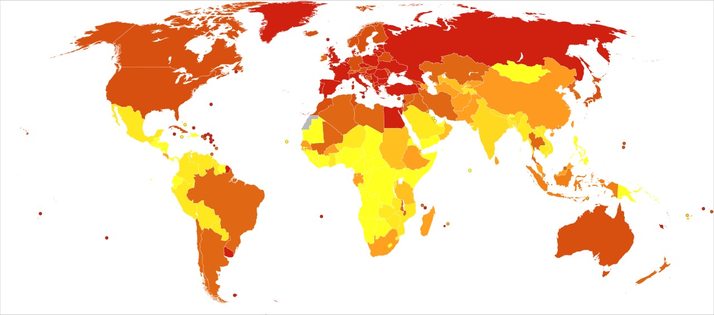

Um câncer que quase ninguém vê na enfermaria e que mesmo assim domina as provas de residência. Raro na vida, abundante na prova — e quem o subestima chega despreparado para uma das questões mais previsíveis do edital de urologia.
Por que a bexiga cai tanto em prova
O paradoxo: raro na enfermaria, abundante na prova
Tem um detalhe sobre o câncer de bexiga que confunde quem está começando: ele não está entre os tumores mais frequentes na vida real, mas aparece com uma regularidade quase irritante nas provas de residência. Essa distância entre prevalência clínica e peso de prova é exatamente o que faz dele um tema perigoso de subestimar. Quem o trata como periférico chega na prova despreparado para uma das questões mais previsíveis do edital de urologia.
Os números de incidência
Entre todos os cânceres que acometem homens, a bexiga responde por algo em torno de 3,5% do total. Nas mulheres, esse peso cai para perto de 1,5%. A diferença entre os sexos não é detalhe estatístico solto — ela antecipa um dos fatores de risco que voltam mais adiante, e ajuda a entender por que o enunciado clássico quase sempre descreve um homem.
Quem cobra e qual é o gatilho do enunciado
Algumas bancas insistem no tema com frequência notável: Enare, Santa Casa, ABC de São Paulo, SUS São Paulo, USP São Paulo e Einstein. Mas saber quem cobra importa menos do que saber como a questão se anuncia. O gatilho quase nunca é a palavra "bexiga" — é o conjunto de fatores de risco plantado no enunciado. Um homem de sessenta e poucos anos, tabagista de longa data, talvez com um ofício industrial no histórico: esse perfil já é a banca acendendo a luz. Reconhecer o gatilho cedo é o que separa quem resolve a questão em segundos de quem fica preso na história clínica.

Quiz — fixação
-
O principal "gatilho" que sinaliza câncer de bexiga em uma questão de prova costuma ser:
Gabarito: B. A banca quase nunca entrega o diagnóstico de bandeja — ela monta o terreno e espera você ler o perfil de risco. Tabagista, homem, acima de 60, exposição ocupacional a corante: é a soma desses dados, não um sintoma isolado, que acende a luz do câncer de bexiga. Não é a dor lombar (A): o quadro clássico é justamente indolor, então dor empurra para o lado errado. Não é a idade sozinha (C): idade é um dos fatores, mas isolada não fecha nada — milhões de idosos não têm o tumor. Não é o emagrecimento (D): sintoma constitucional é tardio e inespecífico, aparece em qualquer neoplasia avançada e não distingue bexiga de coisa nenhuma.
Por que cair na A: dor lombar dispara o reflexo "cólica renal / litíase" — exatamente o oposto do CA de bexiga, cuja marca é sangrar sem doer. Por que cair na C: a idade é real como fator de risco, mas quem marca "idade isolada" confunde fator de risco com gatilho diagnóstico — o gatilho é o conjunto. Por que cair na D: emagrecimento seduz quem associa câncer a perda de peso, mas é achado de doença avançada, inespecífico, e não é o que a banca usa para apontar a bexiga.
-
O câncer de bexiga é proporcionalmente mais incidente em mulheres do que em homens.
Falso. É o inverso, e por margem larga: representa cerca de 3,5% dos cânceres no homem contra 1,5% na mulher, e o sexo masculino é fator de risco na razão de 4:1. A explicação não é acaso estatístico — homens fumam historicamente mais e se expõem mais às profissões de corante/couro/borracha, as mesmas aminas aromáticas que adoecem a bexiga. Marcar "Verdadeiro" inverte a epidemiologia e ainda perde a lógica causal por trás dela.
Por que o "Verdadeiro" engana: alguns associam "bexiga / trato urinário baixo" a queixa feminina (pela alta prevalência de ITU em mulheres) e transferem essa intuição para o câncer. Mas ITU recorrente é só um dos fatores menores; o peso real está no tabagismo e na exposição ocupacional, ambos historicamente masculinos — por isso o tumor é do homem, 4:1.